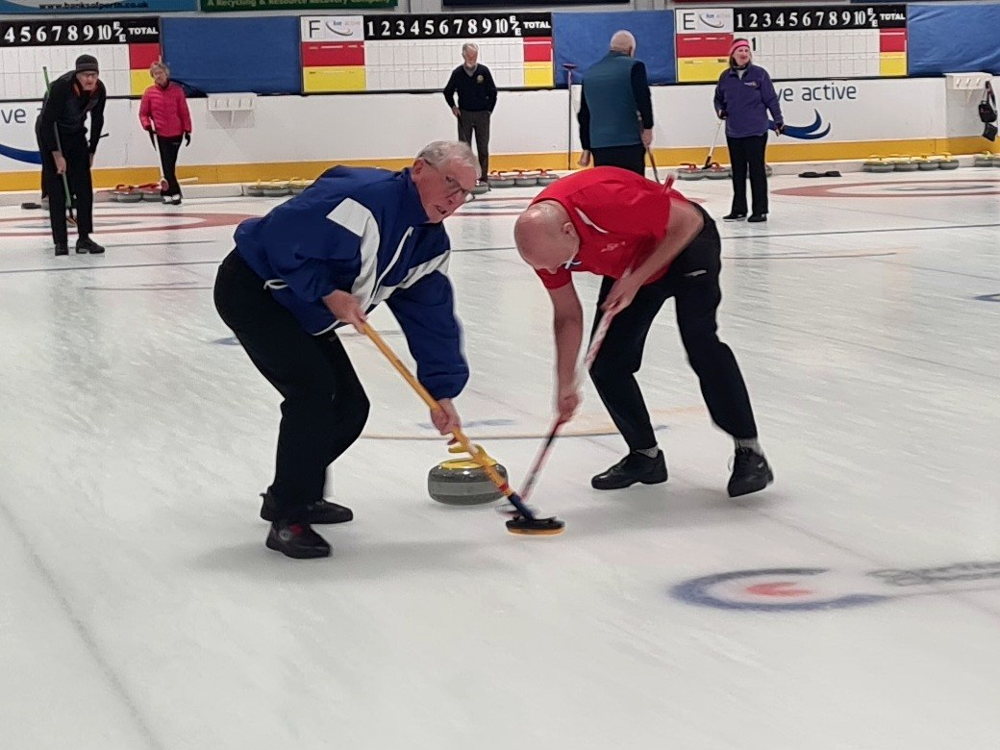
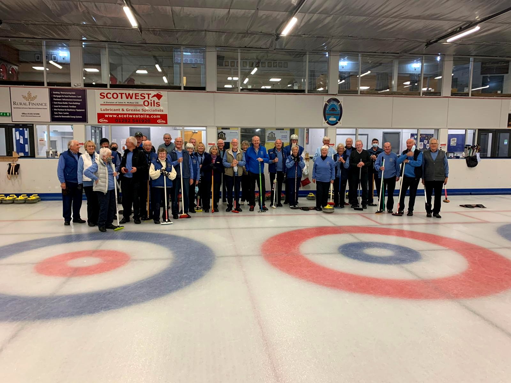
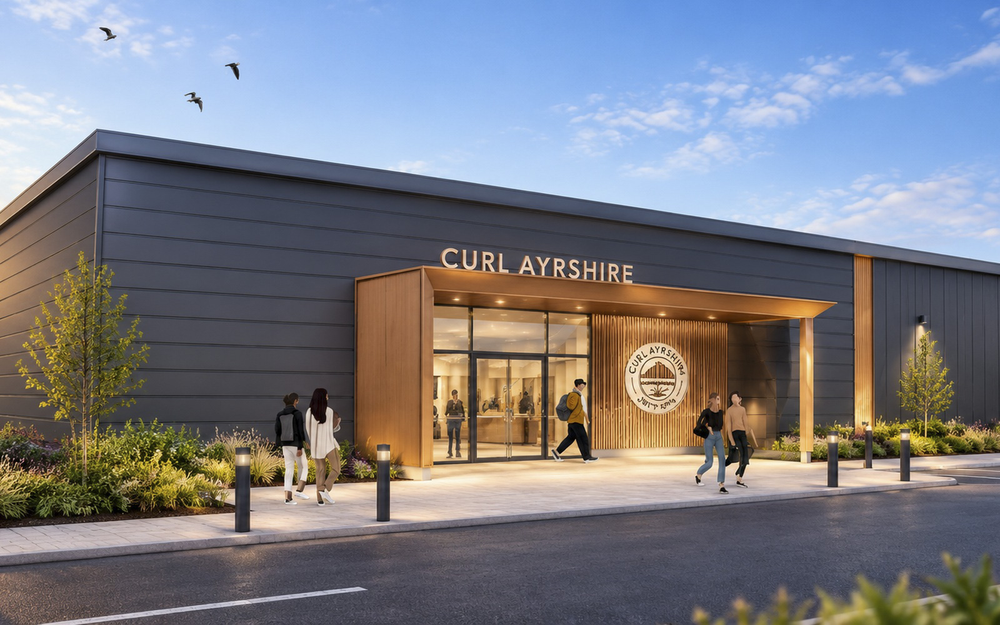
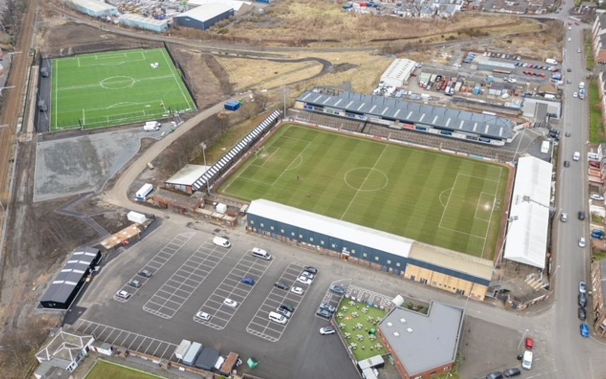
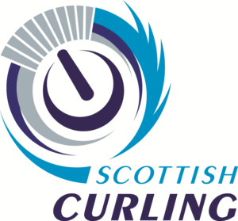

Background
Bringing curling home to Ayrshire.
A proud curling heritage
Ayrshire has a long and distinguished association with curling. The sport has been part of local life for generations, with Ayr and the surrounding area producing players who have represented Scotland at the highest levels, including Olympic medallists, World and European champions, and Scottish champions.
Ayr Ice Rink played a central role in that history. It provided a home for local clubs and a meeting place for the wider curling community, where friendships were formed and the sport was enjoyed by people of all ages and abilities.
When the rink closed in September 2023, after more than 50 years of service, Ayrshire lost its only dedicated curling facility. The impact was immediate. Curlers were left having to travel much further to play, making it harder for clubs to retain members, attract newcomers and encourage younger people into the sport.
The closure threatened not only the future of curling in the area, but also a valued part of Ayrshire’s sporting and social heritage.

The impact of losing local ice
The closure of Ayr Ice Rink created a substantial gap in local sporting provision. Curlers who had previously enjoyed a short journey to play were now having to travel much further to access ice, creating difficulties for individuals, families and clubs across Ayrshire.
The impact has been significant. Since the rink closed, local curling membership has fallen by approximately one-third, from more than 500 participants to around 350. Several clubs have merged or become dormant, while junior participation has fallen considerably.
Travel times have increased from around 10–15 minutes each way to approximately 45 minutes. A typical two-hour curling session can now involve a commitment of more than five hours when travel and the social aspects of the sport are included. For many people, particularly younger players, families, older adults and those without access to private transport, this presents a real barrier to participation.
Without a dedicated local facility, there is a risk that participation will continue to decline, clubs will struggle to remain viable and opportunities for young people to develop their skills will be lost.

A new vision for Ayrshire
Curl Ayrshire Charity (CAC) was established in 2024 with a clear ambition: to bring curling back to Ayrshire by creating a new, modern facility that can serve the needs of the sport and the wider community.
The vision is to build a dedicated four-sheet ice rink, providing a permanent home for local curling clubs and creating opportunities for people of all ages and abilities to take part, including facilities for wheelchair curling.
However, the ambition goes beyond curling. The proposed development is intended to be a community facility, with social space and other amenities that can be used by local groups and organisations. It will offer a place where people can meet, participate in activities and enjoy the benefits of being part of a community.
The aim is not simply to replace what was lost when Ayr Ice Rink closed, but to create something that will support curling and the wider community in Ayrshire for generations to come.

A home at Somerset Park
The proposed new facility will be developed at Somerset Park in Ayr, providing a home for curling in the heart of Ayrshire.
The plans have been developed with the aim of creating a modern, purpose-built facility, designed around the needs of curlers while also offering a welcoming space for the wider community.
Somerset Park is an ideal location, as the owner is developing the wider area into a sporting hub, with football, a gymnasium, padel and other sporting facilities planned. This creates an opportunity for the curling centre to become part of a wider sporting destination for Ayr and the surrounding area.
The development will also place a strong emphasis on energy efficiency and sustainability, with features such as solar panels and heat pumps intended to help reduce energy consumption and running costs.

Strong Support from Scottish Curling
Scottish Curling, the sport's national governing body, has formally confirmed its strong support for Curl Ayrshire's plans to develop a new dedicated curling and community facility at Somerset Park.
In a letter dated 3 August 2026, its Chief Executive, Vincent Bryson, recognised the strategic importance of restoring curling provision in Ayrshire. He confirmed that Scottish Curling is pleased to support the project's continued development and is willing to provide advice, sporting expertise and national context as the plans progress.
Scottish Curling believes the project has the potential to secure a future for curling in Ayrshire while creating a modern, inclusive community asset for generations to come.
